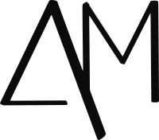

Empreendimentos
Por país, estado e cidade: as parcerias com quem atuamos e os empreendimentos de cada uma.
Os empreendimentos mostrados são exemplos ilustrativos, até cada construtora enviar o material oficial.

AM Global RealtyPor país, estado e cidade: as parcerias com quem atuamos e os empreendimentos de cada uma.
Os empreendimentos mostrados são exemplos ilustrativos, até cada construtora enviar o material oficial.